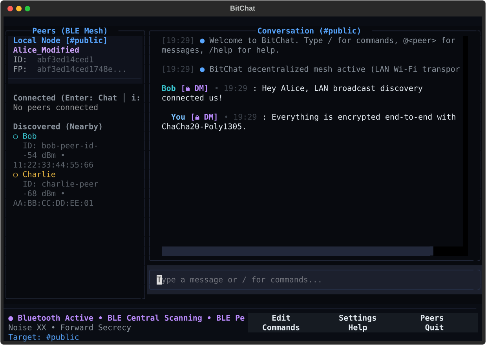
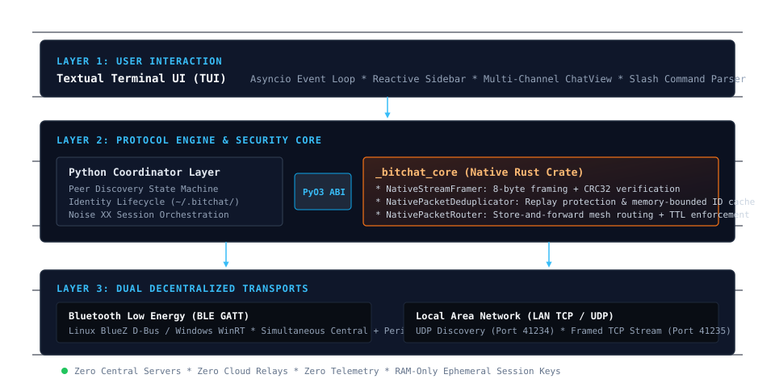
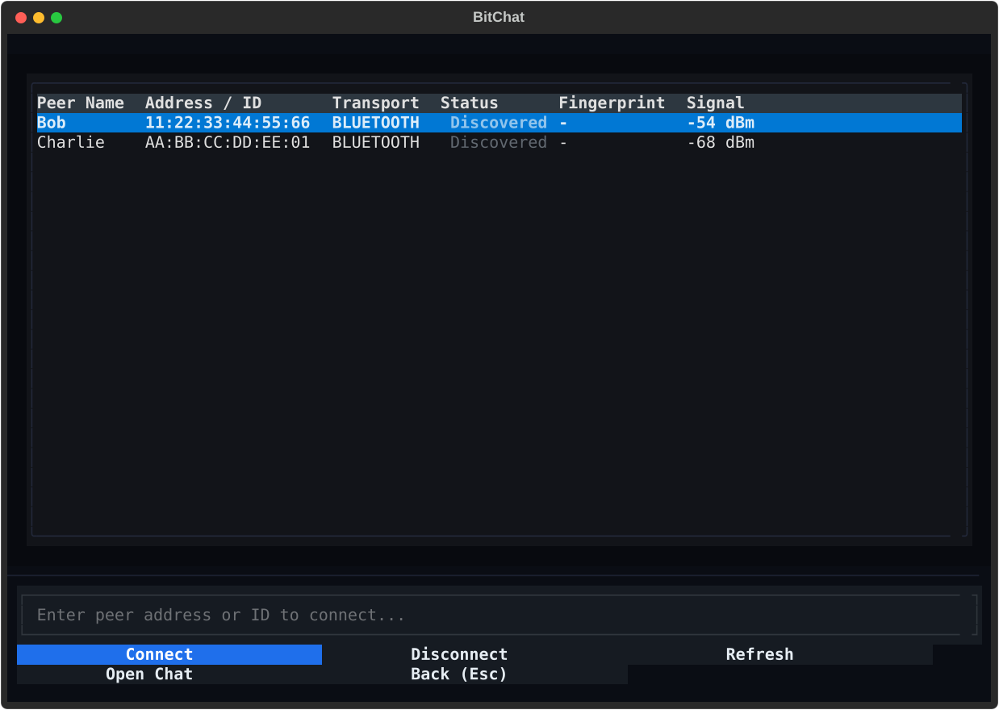
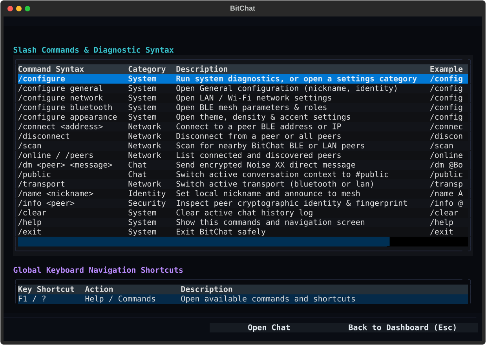
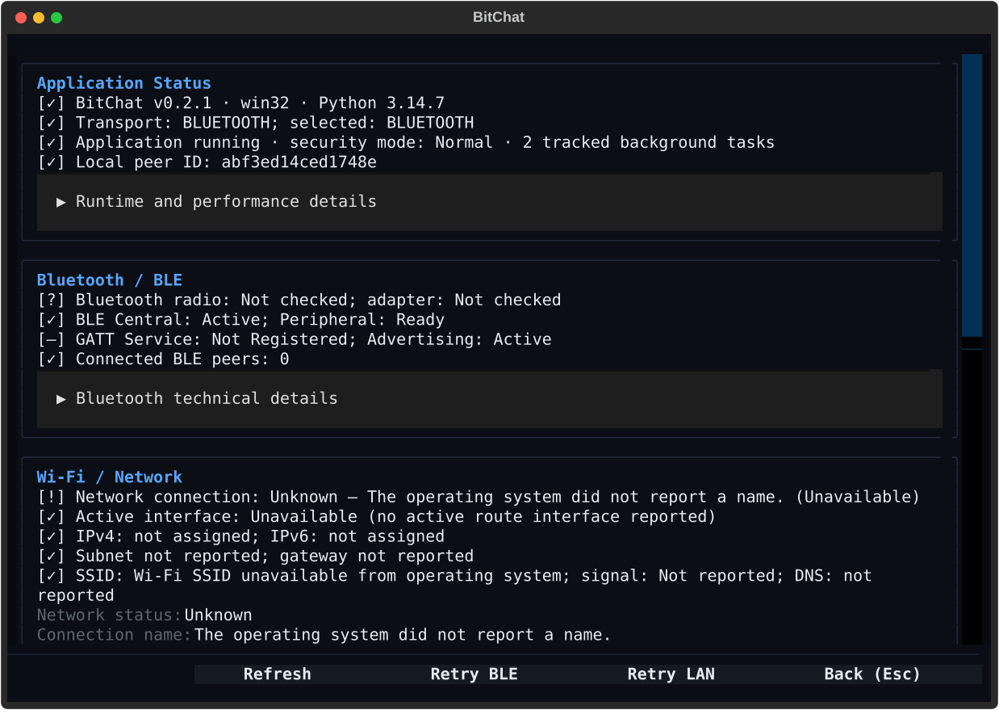

Encrypted mesh chat for terminal environments.
BitChat Python connects peer nodes directly over Bluetooth Low Energy and Local Area Networks. Operates with mutual Noise XX encryption, zero central servers, zero accounts, and zero telemetry.
winget install Java-Mx.BitChat

Engineered for autonomous local communication
Every feature listed here is grounded in the verified codebase of release v0.3.1. We clearly distinguish implemented capabilities from roadmap goals.
Bluetooth Low Energy (BLE)
Full peripheral advertising and central scanning. Connects nodes within radio range without requiring existing network infrastructure or internet connectivity.
Local Area Network (LAN)
Automatic subnet peer discovery via UDP broadcast sockets and high-throughput length-prefixed TCP streaming channels across local Wi-Fi or Ethernet.
Noise XX Cryptography
Mutual peer authentication with ephemeral X25519 key exchange, ChaCha20-Poly1305 authenticated encryption, and BLAKE2s hashing. Session keys exist only in RAM.
Rust Extension Core
Compiled native Rust module (_bitchat_core) providing wire-speed packet framing, CRC32 verification, store-and-forward routing, and bounded replay caches.
Textual Terminal TUI
Terminal-native interface featuring reactive peer sidebars, multi-channel tabs, command execution with prefix boundaries, and real-time radio telemetry.
Reliable Lifecycle Management
Comprehensive multi-stage uninstallation system via bitchat --uninstall, Windows Add/Remove integration, and optional user data scrubbing.
How BitChat operates without central infrastructure
BitChat integrates asynchronous Python networking with native compiled Rust primitives to establish resilient, encrypted local mesh networks.
Nodes continuously advertise and listen across dual channels: BLE GATT service UUID F47B5E2D... and UDP port 41234 on the local network. No external directory server or STUN/TURN server is ever queried.
When two nodes establish a transport connection, they perform a 3-way mutual authentication handshake. Ephemeral keys generate symmetric session keys that remain strictly in volatile RAM and are destroyed upon disconnect.
All packets pass through the Rust NativeStreamFramer with magic byte prefix BC\x01\x00, strict length boundaries, and CRC32 payload verification, eliminating malformed frames before Python processing.
Multi-hop packets are routed through NativePacketRouter with configurable TTL decrements. A memory-bounded LRU deduplication cache discards replayed packets and prevents routing loops.

Verified Textual Terminal Interface
Direct vector screen captures generated from running BitChat instances. High-contrast typography, reactive sidebars, and real-time telemetry.



Verified release packages & support tiers
We provide official release binaries for verified platforms. We do not advertise packages that do not exist.
| Platform | Package Format | Architecture | Release Version | Distribution Status | Action |
|---|---|---|---|---|---|
| Windows 10 / 11 Native Desktop Installer | Inno Setup (.exe) |
x64 | 0.3.1 | Official Release Asset | Download → |
| Linux (Debian / Ubuntu) System Package | Debian (.deb) |
amd64 (x86_64) | 0.3.1 | Official Release Asset | Download → |
| Linux Universal Self-Contained Executable | AppImage (.AppImage) |
x86_64 | 0.3.1 | Official Release Asset | Download → |
| Linux Sandboxed Flatpak Bundle | Flatpak (.flatpak) |
x86_64 | 0.3.1 | Official Release Asset | Download → |
| macOS Source Distribution | Source / uv tool |
Universal | 0.3.1 | Source Build Supported | View Guide → |
Ready to communicate without intermediaries?
Download BitChat v0.3.1 or inspect the open-source code on GitHub.